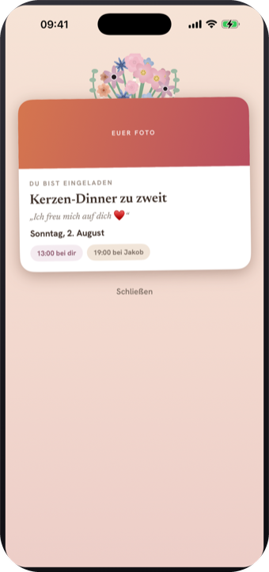

Date-Einladungen
Wählt eine Idee, schreibt eine Karte und stellt einen Blumenstrauß zusammen. Dein Partner packt die Einladung aus und nimmt an oder schlägt eine andere Zeit vor. Angenommene Dates landen im Kalender, mit der Uhrzeit für beide Zeitzonen.